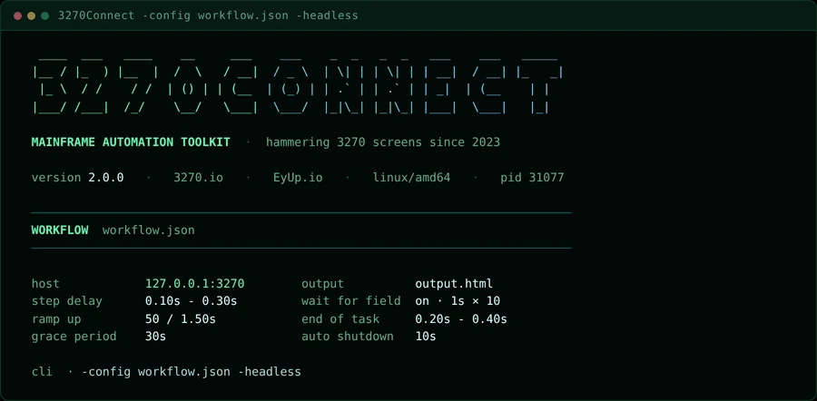
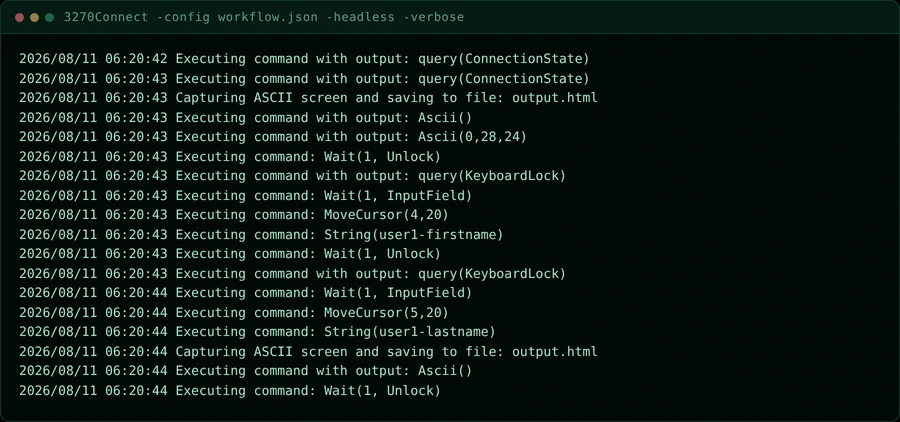
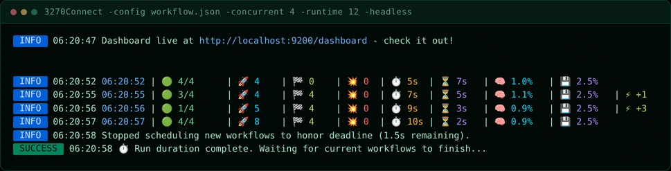
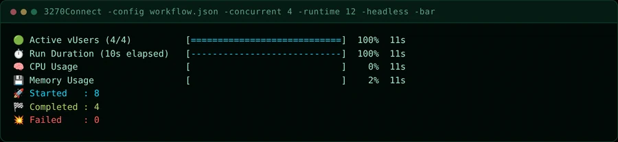
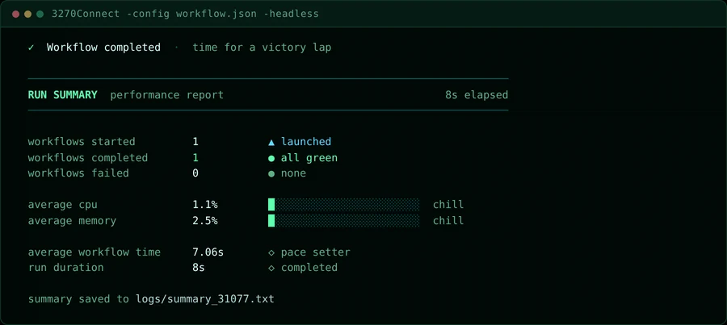
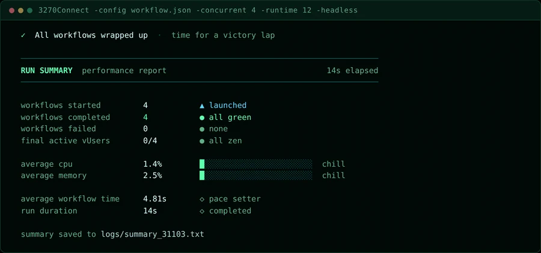

Terminal UI¶
Most 3270Connect runs are watched from a terminal rather than a browser. This page walks through what a run prints, from the header that opens it to the report that closes it, so you know where to look when something is wrong.
The terminal UI shares its palette with the web dashboard and with these docs: phosphor green for the accent, muted green for labels, amber and red reserved for readings that need attention.
The startup header¶
Every run opens with the wordmark, a single line of run identity, and the configuration the run will use.

The identity line carries the version, the project site, the author, the
platform the binary was built for, and the process id. The pid is the one to
note: it names the summary file written at the end
(logs/summary_<pid>.txt), and it is what you pass to kill if a run needs
stopping.
Below the rule, WORKFLOW names the configuration file and lays out the
settings that shape the run:
| Setting | What it controls |
|---|---|
host |
The host and port each workflow connects to |
output |
Where AsciiScreenGrab steps write, or (auto temp file) when unset |
step delay |
The random pause inserted between steps |
wait for field |
Whether steps wait for the terminal to unlock, with delay and retry count |
ramp up |
Batch size and pause used when starting concurrent workers |
end of task |
The random pause after a workflow finishes, before its worker starts another |
grace period |
How long in-flight workflows get to finish once the runtime deadline passes |
auto shutdown |
The countdown on the shutdown prompt when the grace period elapses |
The cli line at the bottom repeats the arguments the run was launched with.
It is worth reading twice — most surprising runs are surprising because a flag
was not what you thought it was.
Reading it back later
The same settings are written to logs/summary_<pid>.txt alongside the
results, so a run can be reconstructed after the terminal has scrolled away.
Watching a run¶
Single workflow¶
A single workflow prints nothing between the header and the summary unless you
ask it to. Add -verbose to see each emulator command as it is issued:
3270Connect -config workflow.json -verbose

This is the view to reach for when a step is failing and you need to know
exactly which command the emulator sent and what came back. For failures only,
-verboseFailures is quieter — see Basic Usage.
Concurrent runs¶
Give the run more than one worker and it switches to a live stats row, printed every five seconds:
3270Connect -config workflow.json -concurrent 4 -runtime 12

Each row is one sample: the time, active vUsers against the worker count,
workflows started, completed and failed, elapsed and remaining seconds, and
host CPU and memory. A trailing ⚡ +n marks workers added by ramp-up in that
interval.
Concurrent runs also start the dashboard automatically, and print its address in the line above — useful when you want charts rather than rows.
Progress gauges¶
-bar replaces the stats rows with gauges and hides the INFO lines:
3270Connect -config workflow.json -concurrent 4 -runtime 12 -bar

The gauges redraw in place, so this stays readable on a long run where the stats rows would scroll away. Totals for started, completed and failed sit below them. Use the rows when you want history and the gauges when you want current state.
Running in CI
Add -headless to keep the emulator from opening a window. It does not
change what is printed, so the header, the live view and the summary all
still appear in the build log.
The end-of-run report¶
When the run finishes, the summary reports what happened.

The outcome line at the top is the quick read — a green tick means no workflow failed. Below the rule:
- workflows started / completed / failed — the run's tally.
completedreports the percentage of started workflows when the two differ. - average cpu / average memory — host usage across the run, drawn as a meter. The bar is green while the machine is comfortable, warms to amber past 50%, and turns red past 80%.
- average workflow time — mean wall-clock duration of one workflow.
- run duration — how long the whole run took.
A concurrent run adds one row, and reports totals across all workers:

final active vUsers shows workers still busy against the worker count when
the run ended. all zen means everything drained cleanly; a non-zero count is
drawn in amber and means workflows were still in flight when the grace period
ran out.
The last line names the file the report was written to. That file is plain text, and it holds the workflow configuration as well as the results:
cat logs/summary_31077.txt
Width and colour¶
The header and summary draw at 80 columns — the width of the 3270 screens the tool drives — and adapt to narrower terminals, dropping the configuration grid to a single column when it has to.
Colour degrades gracefully. On a terminal without truecolour the palette maps to the nearest available; with no colour at all the layout still holds, because it is built from rules and box-drawing characters rather than colour alone.